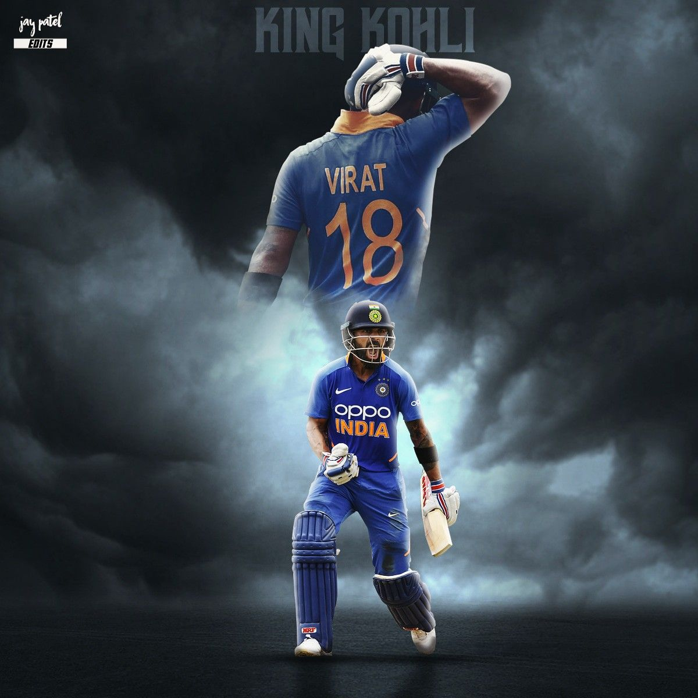

Nikhil's Blog
RECENT POSTS
KING KOHLI
Post by Nikhil Bodempudi, July 13, 2022.
Cricket sports

A familiar name in most Indian households and a name of wonder worldwide- Virat Kohli is that cricketer who has worked hard, paved and earned his way. Born on 5 November 1988, this famous personality is the current captain of the Indian National Cricket Team. Currently, he’s within the top 5 ranks across all ICC batting ranks (Test- 5, ODI– 2, T20I– 5). For a boy who was only three when he first picked up a bat, look how far he has come today!
Let us briefly look at the expanse of his career and how he became one of the most successful batsmen of today’s times.
Virat Kohli’s Early Struggles
Captain Kohli didn’t always have it easy in life. Having lost his father at a young age, he solely focused on cricket soon after completing his 12th and didn’t let any hardships overcome the immense passion he held for the sport of cricket. He is one man who set new records for himself because the previous records weren’t high enough for him. With numerous commemorations and wins stacked under the power of his bat, he is one of a kind. He is a right-handed top-order batsman, usually coming in at the third wicket. Kohli started his run by playing for the Delhi Under-15 team in October 2002. Virat Kohli was the leading run-scorer for his team in that tournament, with 172 runs at an average of 34.40. The Delhi Under-17 team selected him for the 2003–04 Vijay Merchant Trophy in the latter half of 2004. He scored 470 runs in four matches at an average of 117.50 with two hundred and a top score of 251*. His team went on to win, with him being the leading run-scorer.Strong Performance in Junior Cricket
In July 2006, the India Under-19 squad selected Virat Kohli on its tour of England. His average was 105 in the three-match ODI series against England Under-19s. India Under-19 went on to win both the series (ODI and Test). After the tour, the India Under-19 coach was impressed with Kohli and said, “Kohli showed strong technical skills against both pace and spin.” His rise to fame occurred when he captained India’s World Cup Under-19 side in Malaysia in 2008, which they were victorious in. The IPL franchise in 2008 immediately noticed Virat Kohli, and he has since been a part of the Bangalore franchise (Royal Challengers Bangalore). He also became the captain of the team in 2012 and has continued to remain so since then. However, devoid of noteworthy performances in the first edition, his domestic form still won him an India ODI cap on Sri Lanka in the same year.Starts To Be Addressed as King Kohli
The now King Kohli is known for his aggressive batting skills, which led critics to doubt him initially, but he kept proving them wrong by one smashing innings after another. His first show as a captain arrived when he stepped in for MS Dhoni as a substitute captain in 2014. While his way into the Test side was gradual with a little bit of struggle, he went on a record-breaking spree in ODIs: the Indian record for the fastest to multiples-of-thousand runs in ODIs, culminating in the world record for the fastest to 9000 runs in ODIs.
Jersey no. 18 also has been a recipient of various awards:
Sir Garfield Sobers Trophy (ICC Cricketer of the Year)- 2017 and 2018ICC ODI Player of the Year- 2012, 2017, 2018
ICC Test Player of the Year- 2018
Arjuna Award- 2013
Padma Shri- 2017
Rajiv Gandhi Khel Ratna- 2018
In 2020, Virat Kohli was ranked 66th in Forbes list of the Top 100 Highest Paid Athletes of 2020 with estimated earnings of $26 million.
He also holds various records:
Highest career batting average in International T201s
Fastest to reach 12000 runs in ODIs
Has the most Player of the Series Award in T20Is
Kohli is known to be an aggressive batsman with intuitive technical skills. He bats with a slightly open-chested stance and a bottom-hand solid grip and has quick footwork. Strong through the mid-wicket and cover region, he is also known for his varied range of shots, batting under immense pace, and his knack for pacing innings. However, his teammates have praised his confidence, commitment, focus, and work ethic. Kohli is also known to be a “sharp” fielder.
Virat Kohli – The Best Limited Overs Batsman
Kohli is regarded as the best limited-overs batsman in the world, especially while chasing. In ODIs, he averages around 69 in matches batting second as opposed to around 51 batting first. Twenty-six of his 43 ODI hundreds have come in run-chases, and he holds the record for most hundreds batting second. Regarding his impressive record batting second, Kohli has said, “I love the whole situation that comes with chasing. I like the challenge of testing myself, figuring out how to rotate the strike, when to hit a boundary.” In early 2015, Vivian Richards stated Kohli was “already legendary” in the ODI format, while the famous former Australian cricketer the Late Dean Jones dubbed Kohli the “new king of world cricket.” Virat Kohli is one such man who will never stop astonishing the crowd. I guess we can anticipate a lot more from him in the coming days. This article is too small to cover all his attributes as a cricketer. However, we can all learn to dream and follow our passions too!Leave a Comment:
2 Comments:

Peddanna july 15, 2022, 9:12 PM
I am a great fan of him....Hail king kohli!!
Bruce clink july 16, 2022, 8:08 PM
WOW!! what a story! INSPIRED!! I should start playing too
1 Comment:

Valary july 17, 2022, 8:28 PM
Me too! WOW!